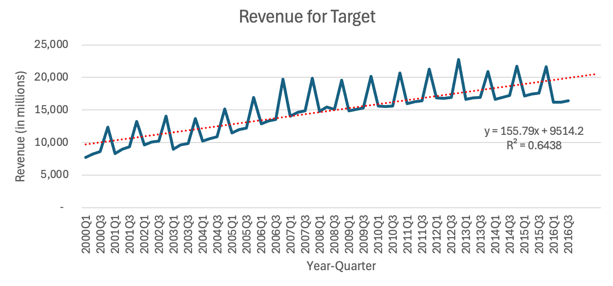
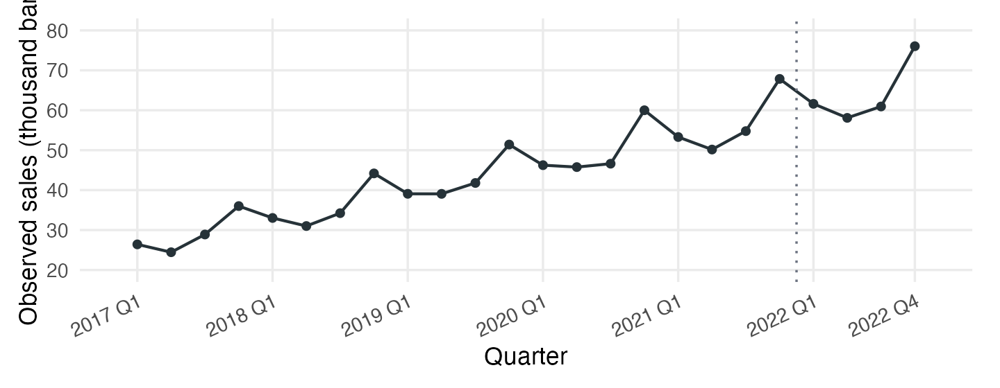
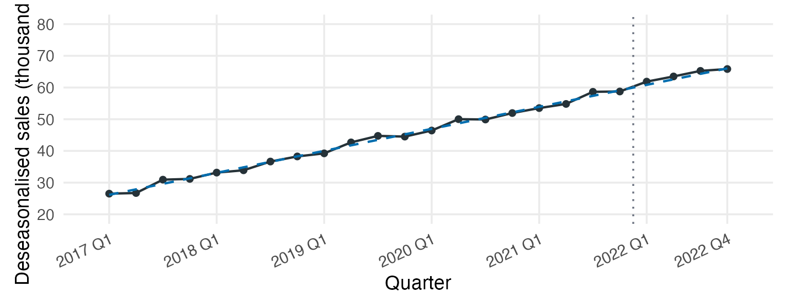

ETX1100/5900 | Business Statistics
19 January 2027
Linear trends, seasonal indices and mean absolute deviation (MAD).
The teaching content is adapted from the ETB1100 Business Statistics Seminar Week 11 deck (14 October 2026). Use the current course schedule and Moodle for class and assessment details.
Source: ETB1100 Seminar Week 11, page 1.
Press E, then Ctrl/Cmd + P and choose Save as PDF.
OR
Click ☰ (menu) > Tools > PDF export mode, then Ctrl/Cmd + P and choose Save as PDF.
The original seminar’s reminders were:
These are historical ETB1100 arrangements. Use the current ETX1100/ETX5900 schedule and Moodle for live deadlines and activities.
Source: ETB1100 Seminar Week 11, page 2.
This source timetable does not set the current intensive’s class or assessment dates.
Source: ETB1100 Seminar Week 11, page 3.
We have used regression to study relationships between variables and checked residuals to assess model fit. This week, time itself becomes the explanatory variable.
We will work through trend forecasts, seasonal adjustments and forecast accuracy together.
Adapted from ETB1100 Seminar Week 11, page 4.
By the end of this seminar, you should be able to:
Adapted to the current Week 7 scope from ETB1100 Seminar Week 11, page 5.
| Data arrangement | What changes? |
|---|---|
| Cross-sectional | Observations are taken across units or subjects. |
| Time series | Observations are ordered through time. |
For this seminar, focus on two time-series features:
Adapted from ETB1100 Seminar Week 11, page 6.
So far, regression has related a response to one or more explanatory variables. What if time is central to the analysis?
Time-series analysis can help us:
Source: ETB1100 Seminar Week 11, page 7.
| Component | Meaning | Example |
|---|---|---|
| Trend | Persistent long-term movement. | GDP rising over time. |
| Seasonal | Regular within-year pattern that repeats. | Retail sales rising before Christmas and falling afterward. |
We will use trend to describe the underlying direction, then use a seasonal index to adjust a forecast for the relevant season.
Selected components from ETB1100 Seminar Week 11, page 8.
When a time series has a long-term trend, use time as the explanatory variable:
\widehat{Y}_t = \widehat{\beta}_0 + \widehat{\beta}_1 t.
The intercept is the estimated trend value before the observed series begins, so it is not the focus here.
Source: ETB1100 Seminar Week 11, page 9.
Number the periods t=1,2,3,\ldots,n. The first observed period is t=1, the second is t=2, and so on.
| t | Annual series | Quarterly series | Monthly series |
|---|---|---|---|
| 1 | 2022 | Q1 2022 | January 2022 |
| 2 | 2023 | Q2 2022 | February 2022 |
| 3 | 2024 | Q3 2022 | March 2022 |
| 4 | 2025 | Q4 2022 | April 2022 |
Source: ETB1100 Seminar Week 11, page 10.
Once a linear trend is fitted, forecast a future period by using its future time index in
\widehat{Y}_t = \widehat{\beta}_0 + \widehat{\beta}_1 t.
For monthly data starting with January 2024 as t=1, October 2026 is t=34.
Source: ETB1100 Seminar Week 11, page 11.
Trend alone may miss a repeated within-year pattern. The chart has an upward trend and a peak every fourth quarter.

Source: ETB1100 Seminar Week 11, page 16.
S_t compares period t with its underlying trend. For quarterly data, the same index repeats each year.
| t | Quarter | S_t | t | Quarter | S_t |
|---|---|---|---|---|---|
| 1 | Q1 2022 | 0.996 | 5 | Q1 2023 | 0.996 |
| 2 | Q2 2022 | 0.915 | 6 | Q2 2023 | 0.915 |
| 3 | Q3 2022 | 0.988 | 7 | Q3 2023 | 0.988 |
| 4 | Q4 2022 | 1.101 | 8 | Q4 2023 | 1.101 |
Source: ETB1100 Seminar Week 11, page 17.
For example, S_t=0.988 means that season is 1.2% below the trend line on average. An index of 1.101 means 10.1% above the trend line on average.
Source: ETB1100 Seminar Week 11, page 18.
In a multiplicative model,
F_t = T_t \times S_t,
where F_t is the forecast, T_t is the fitted trend value and S_t is the seasonal index for time period t.
The forecast adjusts the trend by multiplying it by the index for that period’s season.
Source: ETB1100 Seminar Week 11, page 19.
The seasonal index S_t is given. For each training observation, remove its seasonal effect:
D_t=\frac{Y_t}{S_t}.
Fit T_t=a+bt to training D_t with Excel INTERCEPT and SLOPE.
Forecast on the original scale: F_t=T_tS_t.
Forecast relation: ETB1100 Seminar Week 11, page 19.
In the chocolate-bar workbook, rows 16–35 are the 2017–2021 training data. Column F contains deseasonalised sales; column B contains time t.
Enter this in E6 to estimate a in T_t=a+bt:
The result is about 24.412 thousand bars. Excel takes the deseasonalised values first (known_y_values) and time second (known_x_values). Do not include the 2022 test rows.
Trend model: ETB1100 Seminar Week 11, page 9.
In the same chocolate-bar worksheet, enter this in E7:
The result is about 1.735 thousand bars per quarter. The workbook trend is therefore
T_t \approx 24.412+1.735t.
For test row 36, =$E$6+$E$7*B36 gives the trend. Multiply it by that row’s supplied index to forecast sales.
The separate source PDF example, page 20 uses slightly different fitted coefficients.
In Excel, chart Period (A15:A39) against Sales (000s) (D15:D39): choose Insert, then Line with Markers. Q4 peaks recur as sales rise.

The dotted line begins 2022 test data. Seasonal pattern: ETB1100, page 16.
Chart Period (A15:A39) against Deseason sales (F15:F39). Keep the same vertical scale.

Q4 spikes are reduced. The dashed trend uses training rows only.
Trend model: ETB1100, page 9.
A confectionery company tracks quarterly chocolate-bar sales in thousands. With Q1 2017 as t=1, its fitted linear trend is
T_t = 24.369 + 1.76t.
| Quarter | Seasonal index |
|---|---|
| Q1 | 0.996 |
| Q2 | 0.915 |
| Q3 | 0.934 |
| Q4 | 1.155 |
Source: ETB1100 Seminar Week 11, page 20.
Forecast sales for Q1 2022:
F_{21}=T_{21}S_{21}=61.329(0.996)=61.08
thousand chocolate bars.
Source: ETB1100 Seminar Week 11, page 21.
In the chocolate-bar example:
Source: ETB1100 Seminar Week 11, page 22.
Use earlier deseasonalised observations to fit the linear trend with the supplied seasonal indices. Set aside later periods as a historical test set: they are observed now, but their values were unavailable when the forecasts were made.
For a holdout exercise with the chocolate-bar model, treat Q1 2017–Q4 2021 (t=1,\ldots,20) as training history. Before looking at Q1 2022 sales, the fitted model gives F_{21}=61.08 thousand bars. Once Q1 2022 sales are observed, place Y_{21} beside F_{21} to assess the forecast.
Keep the test observations out of the model-fitting step.
Instructor-added explanation using the model and forecast from source page 20 and page 21. The assumed holdout split is for teaching; the source does not specify one.
Suppose both procedures were fitted before 2024. Compare their forecasts with observed 2024 sales (millions of dollars):
| Historical test quarter | Observed sales | Forecast 1 | Forecast 2 |
|---|---|---|---|
| Q1 2024 | 30 | 31.2 | 28.6 |
| Q2 2024 | 31 | 38.0 | 33.7 |
| Q3 2024 | 40 | 42.7 | 36.1 |
| Q4 2024 | 49 | 54.2 | 44.4 |
The training cutoff is an instructor illustration; the source does not give one. Data: ETB1100 Seminar Week 11, page 28.
A forecast error is the actual value minus the forecast:
e_t=Y_t-F_t.
Smaller errors suggest a more accurate forecast. To summarise the size of errors across several periods, we use mean absolute deviation (MAD).
Adapted to the current Week 7 scope from ETB1100 Seminar Week 11, page 23.
MAD is the average absolute size of forecast errors:
\mathrm{MAD}=\frac{1}{n}\sum_{t=1}^{n}|Y_t-F_t|,
where Y_t is the actual value, F_t is the forecast and n is the number of forecasts evaluated.
In Excel, calculate one test period’s absolute deviation with =ABS(E30-I30) in J30, then fill down the test rows. For the gym worksheet, =AVERAGE(J30:J41) gives test-period MAD.
Source: ETB1100 Seminar Week 11, page 24.
\begin{aligned} \mathrm{MAD}_1 &=\frac{|30-31.2|+|31-38.0|+|40-42.7|+|49-54.2|}{4}\\ &=4.025,\\[0.6em] \mathrm{MAD}_2 &=\frac{|30-28.6|+|31-33.7|+|40-36.1|+|49-44.4|}{4}\\ &=3.15. \end{aligned}
Forecast 2 has the lower MAD for these four quarters.
Source: ETB1100 Seminar Week 11, page 29.
For a time series:
Adapted to the current Week 7 scope from ETB1100 Seminar Week 11, page 32.
The original seminar closed with these arrangements:
These were ETB1100 arrangements in October 2026. Check the current ETX1100/ETX5900 schedule and Moodle instead.
Source: ETB1100 Seminar Week 11, page 33.